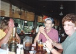
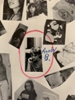
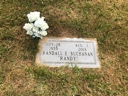
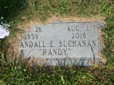

Brandon's Family Tree
Person Chart
Additional Names
| Additional Names | Name |
|---|---|
| Nickname | Randy Buchanan |
Parents
| Father | Date of Birth | Mother | Date of Birth |
|---|---|---|---|
 Philip Eugene Buchanan Philip Eugene Buchanan |
20 Oct 1938 |  Trula Rhea Yelton Trula Rhea Yelton |
9/12/1940 |
Partners
| Partner | Date of Birth | Children |
|---|---|---|
| Deborah Kay Brown |
December 11, 1962 | Brandon William BuchananNathaniel Edward Buchanan |
Person Events
| Event Type | Date | Place | Description |
|---|---|---|---|
 Birth Birth |
November 26, 1959 | Kingsport, Tennessee, USA | |
| Marriage |
11/18/1985 | ||
| Place of Residence |
1987 | Kingsport, Tennessee, USA | |
| Place of Residence |
1996 | Kingsport, Tennessee, USA | |
| Divorce |
2010 | ||
| Obituary Reference |
8/3/2016 | ||
| Death |
8/1/2016 | ||
| Burial |
8/5/2016 | Gunnings Cemetary, Sullivan, Tennessee, United States |
Facts
| Fact | Description |
|---|---|
| Eye Color | blue |
| Height | 5’ 9” |
| Skin Color | white |
Notes
| Randy's middle name of "Eugene" comes from his father's middle name, Philip Eugene Buchanan, as well as the middle names of his father and grandfather before him, Harry Eugene & Peery Eugene Buchanan. |
Sources
| Description | Page | Quality | Information | Evidence |
|---|---|---|---|---|
| Randy Buchanan’s Driver’s License |
Don't know | Don't know | Don't know | |
| U.S. Public Records Index, Volume 1, Online publication - Provo, UT, USA: Ancestry.com Operations, Inc., 2010.Original data - Voter Registration Lists, Public Record Filings, Historical Residential Records, and Other Household Database Listings.Original data: Voter Registration Lists, Public |
Don't know | Don't know | Don't know | |
| U.S. Public Records Index, Volume 1, Online publication - Provo, UT, USA: Ancestry.com Operations, Inc., 2010.Original data - Voter Registration Lists, Public Record Filings, Historical Residential Records, and Other Household Database Listings.Original data: Voter Registration Lists, Public |
Don't know | Don't know | Don't know | |
| Autopsy Report for Randall Buchanan |
Original | Primary | Direct |
Media
Pictures

obituary photo

dad, nana, & Jerry

dad

colorized photo of Randy

Randy, Phil, & Cindy

photo booth pictures of Randy & Phil

mom & dad

Randy, Phil, & Cindy with William Ballard Hicks

mom & dad

dad

Randy & Phil at the beach

dad & unknown person

dad

dad & Brenda

dad over at mom's

Nathaniel (left), Brandon (center), & Randy (right)

dad in his 1973 yearbook, page 68

dad in his 1978 yearbook, page 78

Randy's name written in his 1978 yearbook

in Charleston, SC

Gravestone

Gravestone

at aunt Peggy's

Brandon & Randy at EPCOT in the Mexico pavilion

mom & dad

at the Jacksonville Zoo

Randy holding Brandon

at nana's

at nana's

at the Germany pavilion in Epcot

at the beach at Fort Clinch State Park

at the apartment in Kingsport, TN

playing air hockey at the apartment in Kingsport

in front of the pirate statue near the old train station & waterway at Amelia Island, FL

Brandon & Randy on Christmas '92

Randy & Brandon
Video Files

Hicks gravesite